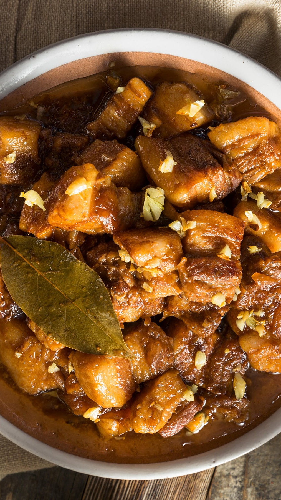
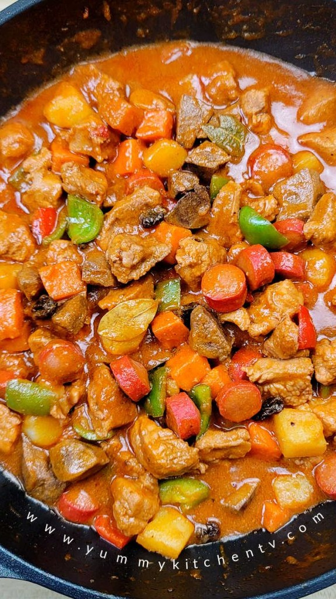
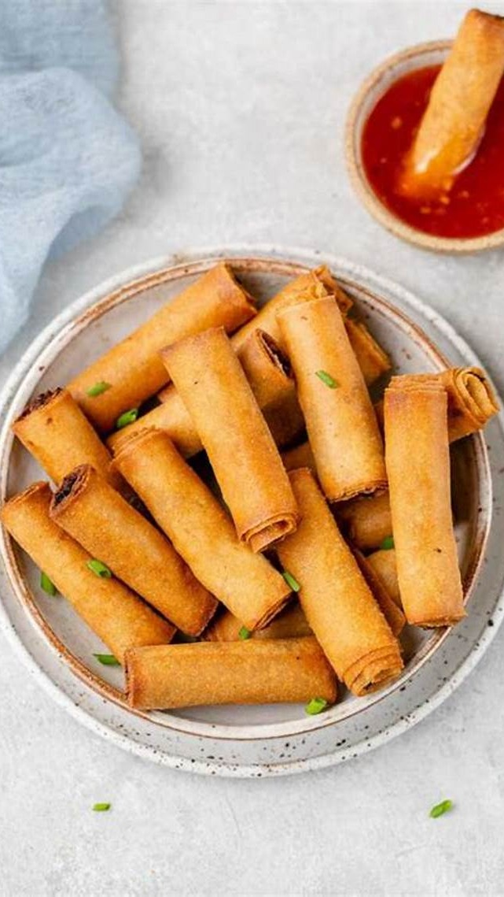
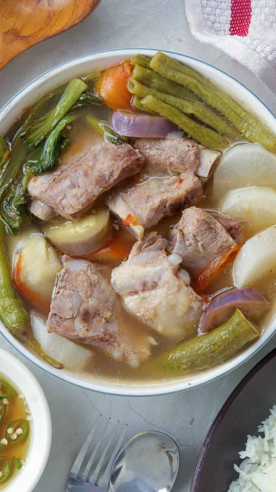
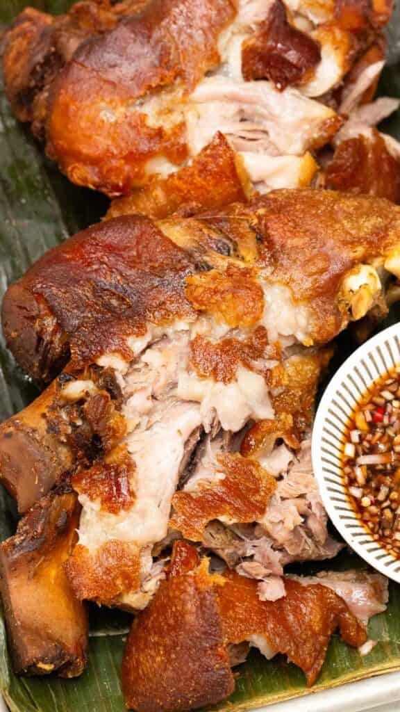
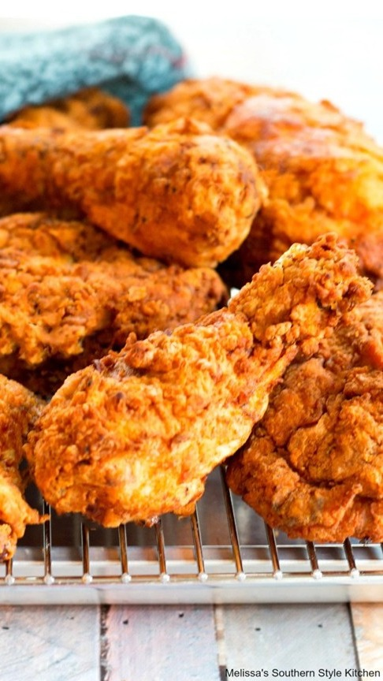
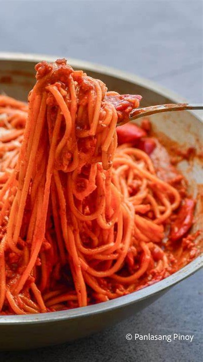
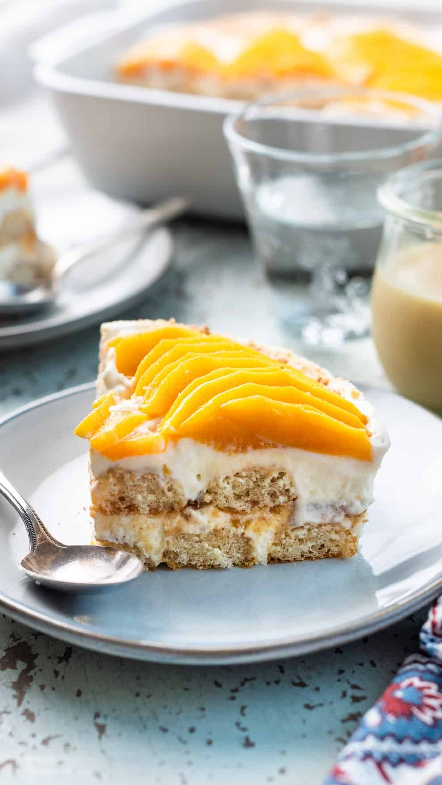
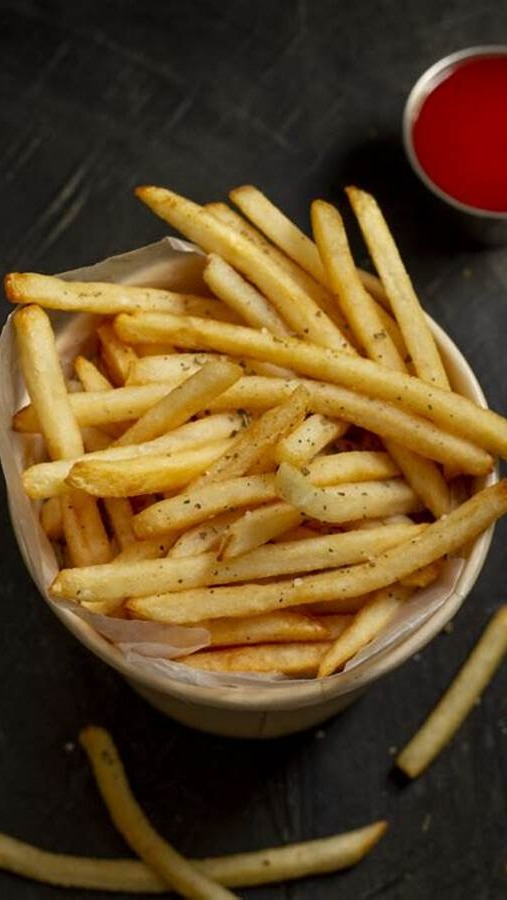
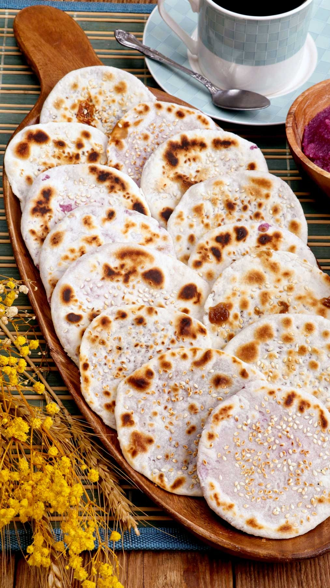

My Top 10 Favorite Foods
私の好きな食べ物トップ10

The perfect harmony of soy sauce, vinegar, garlic, and love, slow-cooked to tender perfection.

A heartwarming medley of pork, liver, and vegetables, simmered in rich, savory tomato sauce.

Golden, crispy, and packed with flavor—every bite a perfect blend of crunch and savory goodness.

A comforting bowl of tamarind-infused broth, brimming with tender meat and fresh vegetables.

Deep-fried pork knuckles with crackling golden skin and juicy meat, best enjoyed with dipping sauce.

Irresistibly crispy, perfectly seasoned, and juicy inside—each and every bite is pure comfort food bliss.

Sweet, savory, and loaded with cheese—Filipino-style spaghetti brings childhood memories to life.

Layers of sweet mangoes, graham crackers, and creamy goodness that melt in your mouth effortlessly.

Crispy golden perfection, lightly salted and best paired with your favorite dip for ultimate indulgence.

A delightful bite of caramelized muscovado-filled flatbread, soft yet flaky, with a touch of nostalgia.